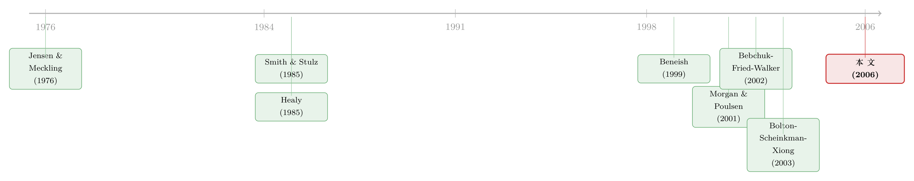

凸性的诱惑：为什么期权——而不是股票——把高管推向了财务造假
本文读的是 Burns & Kedia (2006, Journal of Financial Economics)：在 S&P 1500 公司里，真正把 CEO 推向「财务重述」式造假的，不是他手里的股票、限制性股票、长期激励，也不是工资加奖金，而是股票期权对股价的敏感度——因为期权的凸性替造假者锁住了下行风险，让他「涨了通吃、跌了少赔」。
1 一个被反复念叨、却很少被拆开的指控
1998 年，时任 SEC 主席 Arthur Levitt 站在纽约大学的讲台上撂下一句话：高管想抬高自己手里期权的价值，于是有了操纵会计数字的动机（Levitt, 1998）。再往前一年，Tyco 那位后来锒铛入狱的 CEO Kozlowski 更是把期权直白地形容成「在牛市里、靠一家热门公司、白白赚到大钱的免费车票」。
这两句话听上去顺理成章，几乎成了 2000 年代初公司治理讨论的「公共常识」：期权 → 贪婪 → 造假。但常识有个毛病——它太顺了，顺到没人愿意停下来问一句：如果真是薪酬在作祟，那到底是薪酬的哪一部分在作祟？
毕竟，能把 CEO 的钱包和股价绑在一起的工具，不止期权一种。普通股权、限制性股票、长期激励计划 (long-term incentive plans, LTIPs)、和随业绩浮动的奖金，统统都让「股价涨、我变富」。如果故事只是「钱包绑着股价，所以想抬股价」，那这五样东西应该一起背锅。
Burns 和 Kedia 这篇 2006 年发表在 JFE 上的论文，干的就是这件「把常识拆开」的事。而拆开之后的结论相当锋利：五样东西里，只有期权一样在显著地推动造假。 这不是程度上的差别，而是有和无的差别。
2 真正关键的一步：凸性，而不是「绑定」
要理解为什么单单是期权，得先看清期权和其它薪酬在「形状」上的根本不同。
普通股权和限制性股票，payoff 是对称的：股价涨一块，我赚一块；股价跌一块，我赔一块。所以，如果一个 CEO 靠激进的会计手法把股价暂时吹高，等到造假被揭穿、股价崩盘的那一天，他手里的股票同样会跟着腰斩——除非他能赶在重述公告之前把股票悄悄卖光。但限制性股票有三到五年的归属期，大额持股一卖就可能丢掉控制权带来的好处，想跑也跑不利索。
期权不一样。期权让 CEO 的财富成为股价的一个凸函数 (convex function)：股价涨，期权价值跟着涨；股价跌，期权最多跌到归零，再往下就与他无关了。换句话说，造假成功，他吃下全部上涨；造假败露、股价跳水，他的损失被封了底。好的时候重奖，坏的时候却不必同等受罚——这才是问题的核心。
用一句话概括全文的「机制」：把高管财富做成凸函数的，是期权而非股票；凸性削平了造假的下行代价，于是只有期权敏感度，才系统性地买来了造假的动机。
作者顺着这个逻辑写下了一组层层递进的假设。最基础的是 H1：
H1：来自股票期权的「业绩—薪酬」敏感度越高的 CEO，越可能采取与重述相关的激进会计手法。
然后是更精细的两步。H2 指向已归属期权——因为只有能在造假期内行权变现的期权，才真正构成激励；H3 则直接指向凸性本身：
H3：当一个微小的股价变化能引起业绩—薪酬激励的巨大变化时（即凸性更大时），激进会计更可能发生。
而对其它薪酬成分，作者给出的是一个「无效假设」，并且这个「无效」本身就是预测：
H4：股权、限制性股票、LTIP 与激进会计无关；且它们的大额持有，可能会抵消期权敏感度对造假的正向推动。
这是全文最见功力的地方——它不是笼统地说「薪酬有问题」，而是用 payoff 的几何形状，事先把五样工具分成了「会作恶的」和「不会作恶的」两堆，再拿数据去验。
3 怎么把「敏感度」量出来
要检验上面这些假设，得先把抽象的「激励」翻译成一个可以放进回归的数字。
作者采用的是当时的标准做法（Core and Guay, 2002）：期权敏感度 = 当公司价值变动 1% 时，CEO 所持期权组合价值的变化量。直觉上，这正是期权对股价的 Black-Scholes delta，按持有量加总。delta 越大，股价每动一点，CEO 的纸面财富就动得越狠，他「想让股价动起来」的冲动也就越强。
凸性 (convexity) 则对应期权价值对股价的二阶变化——即 gamma 一类的量。凸性大，意味着股价小涨一点，敏感度本身就会跳一大截；于是造假抬高股价，不只让 CEO 更富，而且「以加速度变富」。这正是 H3 想抓的东西。
对照组里，股权敏感度、限制性股票、LTIP、以及「工资加奖金对报告业绩的敏感度」，全都用同一套思路度量，一并塞进回归。这样一来，五种激励站在同一条起跑线上，谁在真正驱动造假，就只能靠数据自己说话了。
4 数据：把「造假」操作化为「重述」
识别造假，最大的难题是：造假本身是看不见的。作者的处理办法，是用因会计违规而被迫重述财务报表 (financial restatement) 作为造假的可观测代理。
样本来自 ExecuComp（覆盖 S&P 大盘 500、中盘 400、小盘 600）与一份重述清单的匹配。重述清单的主体，是美国审计总署 (General Accounting Office, GAO) 为参议院银行委员会撰写的那份报告——GAO 在 1997 年 1 月至 2002 年 6 月间，识别出 845 家公司的 919 起重述公告；作者又补上了 1995–1997 及 2002 年的 Lexis-Nexis 搜索结果。匹配后得到 215 家重述公司。剔除金融业（SIC 60–69，因杠杆、市净率等控制变量难以解释）。
关键的是，作者只保留那些原报表不符合公认会计准则 (GAAP) 的重述，而把因会计政策变更、并购、拆股、孤立差错引起的「无辜重述」排除在外。为什么这一步重要？因为只有「有意为之」的激进会计，才会真正欺骗市场。一个佐证是市场反应：重述公告前后 -5 到 +5 天的累计异常收益 (cumulative abnormal return, CAR) 均值约 -10%、中位数约 -5%——若只是 GAAP 框架内的技术性重述，市场是不会有这种反应的（Palmrose et al., 2004）。另一个佐证：215 家里有 38 家正式受到 SEC 调查并被处以会计与审计执法公告 (AAERs)。
最终进入分析的，是 266 个被重述的「公司—年」，对照约 8,000 个未重述的公司—年。顺带几个有意思的描述统计：重述对净利润的平均影响是调减 1.0132 亿美元（中位数仅 1,050 万，分布极度右偏），约 93% 的重述涉及高估利润，其中约 40% 源于收入确认 (revenue recognition)；从首次错报到公告，中位数公司经过了 1.08 年。
这里有个绕不开的样本特征：能进 ExecuComp 的公司本就偏大，所以样本里的重述公司也比「平均的重述公司」更大。作者承认了这一点，但也指出——大公司的造假，恰恰才是政策制定者和投资者最该关心的那一类。
5 主要结果：只有期权这一根弦绷响了
把所有激励放进对「是否重述」的多元回归（控制规模、杠杆、成长机会、研发、资本开支、外部融资等），结论干净得近乎刻薄：
第一，期权敏感度与造假倾向显著正相关。 CEO 期权组合对股价的敏感度越高，公司当年重述的概率就越大。这是 H1 拿到的强证据。
第二，凸性同样显著为正。 CEO 财富对股价越「凸」，造假倾向越高——H3 成立。这一条尤其要紧，因为它把机制从「期权值钱」精确到了「期权的凸性」，正中下行风险被封顶的那个要害。
第三，其它四样激励，全部沉默。 股权、限制性股票、LTIP 派发、工资加奖金的敏感度，没有一个与造假倾向显著相关。H4 的「无效预测」反而被证实了。换句话说，虽然股权和限制性股票理论上也让 CEO 承担造假被揭穿的代价，但这份代价没有大到足以抵消期权带来的正向诱惑。
第四，不只是「会不会」，还有「造多大」。 作者进一步把重述对净利润的影响（造假的「量级」）放到左边，发现期权敏感度与造假量级也显著正相关，而其它薪酬成分依旧与量级无关。期权高的 CEO，不仅更可能造假，造起来还更狠。
故事到这里其实可以收尾了，但作者还顺手验了两个外围假设，让整幅图景更完整。一是公司环境（H6）：在行业平均市净率较高的「投机期」，造假更可能发生——与 Bolton et al. (2003) 的「投机市场短视」一脉相承，不过这个证据偏弱，而且用长期分析师预测代理的「投资者乐观」并不显著。二是内幕行权（H7）：在涉嫌造假期内大量行权的 CEO，其公司在重述公告时的市场反应更负——这与 Bebchuk 等人「期权让管理层得以伪装套现」的观点吻合：市场当时没能读懂这些行权里的坏消息，直到重述那天才补上反应。
最后，作者还碰了一下规范性的弦：Jensen and Meckling (1976) 与 Smith and Stulz (1985) 早就论证过，把薪酬和业绩绑紧能改善激励对齐、提升公司价值——所以一定量的期权是好的。但本文的证据提示，超过某个「最优」水平的期权会反过来催生造假动机；作者也确实找到一些证据，表明重述公司—年与「过度的」期权敏感度显著相关。激励这味药，过量就成了毒。
6 文献脉络
这条线索的源头，是把「代理冲突」摆上桌面的 Jensen and Meckling (1976)：要压住经理与股东的利益分歧，就该把薪酬绑到股东财富上。紧接着，Smith and Stulz (1985) 论证了期权的妙处——它的凸性能抵消经理的风险厌恶，逼着他去接那些正 NPV 的高风险项目。于是几十年里，期权被供奉为「利益对齐」的最佳工具，Morgan and Poulsen (2001) 甚至发现市场会为采纳业绩敏感薪酬方案的公司鼓掌。

但风向变了。Bebchuk, Fried and Walker (2002) 提出「管理层权力」假说：期权也可能是高管攫取超额薪酬的遮羞布，关键在于这种攫取能被「伪装」。Bergstresser and Philippon (2002) 把这种伪装建模为——靠信息不对称行权的经理，和为流动性行权的经理，混在一起难以分辨。Bebchuk and Bar-Gill (2003) 则把焦点直接拨向「误报公司业绩」。
与此同时，盈余管理的实证也在积累，但证据是混着的：Healy (1985) 发现高管会操纵应计项目来最大化奖金；Beneish (1999) 发现利润高估期内经理更可能净卖出股票——可这些研究多聚焦 1993 年之前，早于期权大爆发，因而无力回答「期权到底干了什么」。最接近本文的，是 Gao and Shrieves (2002)：他们发现盈余管理强度与 CEO 期权组合敏感度正相关，但把原因归给「利用 payoff 非线性」时，并没有真正做实证检验。
Burns and Kedia (2006) 正落在这个交叉口上：它把「期权 vs 其它薪酬」做成一场对照实验，用因 GAAP 违规而被迫重述作为造假的硬代理，第一次干净地证明——是凸性，而非绑定，把 CEO 推过了那条线。这与本博客讨论过的几条线索都能接上：薪酬如何反过来塑造高管行为，可参见《老板手里那把期权，正在悄悄把股利换成回购》；而把期权重新定价以「救活」激励的另一面，可参见《给「水下」的期权重新定价，到底是老板在自肥，还是公司在救火？》。
7 评论与延伸（Q&A + 研究方向）
(a) 几个可能的疑问
Q：用「重述」代理「造假」，会不会把无辜的会计差错也算进去了？
作者花了不少力气堵这个口子：只保留原报表不符合 GAAP 的重述，排除政策变更、并购、拆股、孤立差错；并用
-10%的公告 CAR 和38家被 SEC 处以 AAERs 来佐证样本确实偏「有意为之」。残余的测量误差会让估计偏向「找不到效果」，所以能找到显著结果，反而更可信。
Q：既然股权和限制性股票也绑着股价，为什么它们就不推动造假？
关键在 payoff 的形状。股权、限制性股票是对称的，造假败露时同样要承担股价下跌；加上归属期、控制权顾虑让 CEO 难以提前脱手，于是「下行代价」真实存在。期权的凸性把下行封了底，这才是它独有的作恶动机来源。
Q：会不会是反过来——「想造假的公司」恰好更爱发期权？
这是本文最实在的内生性软肋。期权敏感度并非随机分配，董事会发多少期权本身可能与公司类型、成长性、风险偏好相关。作者用了一批公司层控制变量，并讨论了「过度期权」，但没有一个外生冲击来彻底切断反向因果。结论更稳妥的读法是「稳健的相关 + 可信的机制」，而非干净的因果。
Q：凸性和敏感度高度相关，怎么知道是凸性在起作用而不是水平？
作者把敏感度（一阶，delta 类）与凸性（二阶，gamma 类）分开度量、分别进回归，发现凸性自身显著为正。这与「下行被封顶」的机制一致——真正诱人的不是「钱包跟着股价动」，而是「跌了不必同等受罚」。当然两者的统计可分性，取决于样本里它们的共线性程度。
Q：这是不是说期权是坏东西、该废掉？
不是。本文恰恰承接了 Jensen-Meckling 和 Smith-Stulz 的正面传统：适量期权改善激励对齐、提升价值。本文的边际贡献是指出存在一个「最优之上」的区间——「过度」期权才与造假相关。政策含义是剂量问题，不是有无问题。
Q：H6（投机期更易造假）和 H7（内幕行权预示更负反应）算强证据吗？
都偏外围、偏弱。H6 里只有「行业市净率高」这个代理显著，分析师长期预测代理的乐观并不显著；H7 与 Bebchuk-Bar-Gill 的伪装假说方向一致，但样本与识别都比核心结果单薄。把它们当作「与主线相容的旁证」更合适。
(b) 几个可能的研究问题与提案
-
凸性激励 → 公司债定价与违约 【经济故事】既然期权凸性会诱发造假、放大尾部风险，债权人理应要求补偿。一个自然的问题是：CEO 期权凸性高的公司，信用利差是否更宽、评级是否更低？造假暴露往往伴随债券价格的剧烈重定价。 【可行性】高。ExecuComp 的期权敏感度/凸性 × TRACE 公司债成交 × Mergent FISD 发行信息即可构建面板，控制评级、杠杆、久期。识别上仍是相关性为主，但可借「重述公告」做事件研究，看债券 CAR 与事前凸性的关系。
-
外资/机构持有人是否「定价」了造假风险 【经济故事】如果造假风险可观测于薪酬结构，机构投资者（尤其信息劣势的外资）会不会系统性回避高期权凸性的公司？或者反过来，被动持有这类公司的基金，在重述时承受了更大损失？ 【可行性】中。13F + ExecuComp 可测机构持股与凸性的横截面关系；难点在于把「主动回避」与「风格暴露」分开，需要持仓变动而非静态持股，并用基金层固定效应。
-
SOX 之后凸性—造假关系是否被掐断 【经济故事】本文样本止于 2002 年，恰在 Sarbanes-Oxley 前夜。SOX 的高管认证、追回 (clawback) 条款理论上抬高了造假的下行代价——这正是对「凸性封顶」机制的直接对冲。关系是否在 2003 年后减弱？ 【可行性】高。把样本延展到 2003 年后，用 SOX 生效做时间断点（DiD：高凸性 vs 低凸性公司）。挑战是同期还有期权费用化等多项制度变更，需小心混淆。
-
凸性—造假的横截面异质性：治理是否能压住它 【经济故事】Agarwal and Chadha (2005) 发现董事会特征影响重述倾向。一个有意思的交互是：独立董事、审计委员会质量，能否削弱期权凸性对造假的推动？这把「薪酬激励」和「监督机制」放进同一个方程。 【可行性】中。需要治理变量（IRRC/ISS、董事会数据）与薪酬数据合并，做凸性 × 治理的交互项。识别仍是相关性，治理本身也内生。
-
造假的「量级」与凸性的非线性 【经济故事】本文已发现期权敏感度与造假量级正相关。更进一步：这种关系是否存在阈值或加速段——即凸性越过某点后，造假规模陡增？这能把「过度期权」这个模糊概念做实。 【可行性】中。用重述对净利润的影响作连续因变量，对凸性做分段/样条回归。难点在造假量级的测量噪声大（约 200% 净利润以上的离群值已被作者剔除），样本量也受限于
266个重述年。
我的评判
这篇论文的贡献，在于它把一个被反复念叨却从未拆开的指控，变成了一个可证伪的对照实验：不是泛泛地说「薪酬诱发造假」，而是用 payoff 的凸性，事先把五种激励分成两类，再让数据宣判——结果是期权独自背锅，且不只是程度差异，而是有无之别。机制（下行风险被封顶）、度量（Core-Guay 敏感度与凸性分离）、与代理（GAAP 违规重述）三者咬合得相当紧，这是它至今仍被频繁引用的原因。
最大的担忧仍是内生性：期权敏感度由董事会内生决定，可能与某种「难以观测的公司激进度」共生，反向因果无法用现有设计彻底排除。其次是样本偏大（ExecuComp 限制）与重述代理的噪声——后者会压低估计，倒不至于伪造出效果，但前者限制了外推。
如果要往下做，我最想看到的是一个外生冲击来切断反向因果——比如利用税法或会计准则变化（FAS 123R 的期权费用化、SOX 的 clawback）造成的薪酬结构外生变动，去重新识别凸性对造假的因果效应；以及把视角从「股票市场」移到信用市场，看债权人到底有没有为这份凸性风险定价。毕竟，造假封顶的是 CEO 的下行，而把这份下行真正接走的，往往是债主。
参考文献
Bebchuk, L., Bar-Gill, O. (2003). Misreporting corporate performance. Working paper, Harvard Law School.
Bebchuk, L., Fried, J., Walker, D. (2002). Managerial power and rent extraction in the design of executive compensation. University of Chicago Law Review 69, 751–846.
Beneish, M. (1999). Incentives and penalties related to earnings overstatements that violate GAAP. The Accounting Review 74, 425–457.
Bergstresser, D., Philippon, T. (2002). CEO incentives and earnings management: evidence from the 1990s. Journal of Financial Economics, forthcoming.
Bolton, P., Scheinkman, J., Xiong, W. (2003). Executive compensation and short-termist behavior in speculative markets. Working paper, Princeton University.
Burns, N., Kedia, S. (2006). The impact of performance-based compensation on misreporting. Journal of Financial Economics 79(1), 35–67.
Core, J., Guay, W. (2002). Estimating the value of employee stock option portfolios and their sensitivities to price and volatility. Journal of Accounting Research 40(2), 613–630.
Gao, P., Shrieves, R. (2002). Earnings management and executive compensation: a case of overdose of option and underdose of salary? Working paper, University of Tennessee, Knoxville.
Hall, B., Liebman, J. (1998). Are CEOs really paid like bureaucrats? The Quarterly Journal of Economics 103, 653–691.
Healy, P. (1985). The effect of bonus schemes on accounting policies. Journal of Accounting and Economics 7, 85–107.
Jensen, M., Meckling, W. (1976). Theory of the firm: managerial behavior, agency costs and ownership structure. Journal of Financial Economics 3, 305–360.
Levitt, A. (1998). The numbers game. Remarks at the NYU Center for Law and Business, New York.
Morgan, A., Poulsen, A. (2001). Linking pay to performance—compensation proposals in the S&P 500. Journal of Financial Economics 62, 489–523.
Palmrose, Z., Richardson, V., Scholz, S. (2004). Determinants of market reactions to restatement announcements. Journal of Accounting & Economics 37, 59–89.
Smith, C., Stulz, R. (1985). The determinants of firms' hedging policies. Journal of Financial and Quantitative Analysis 20, 391–405.